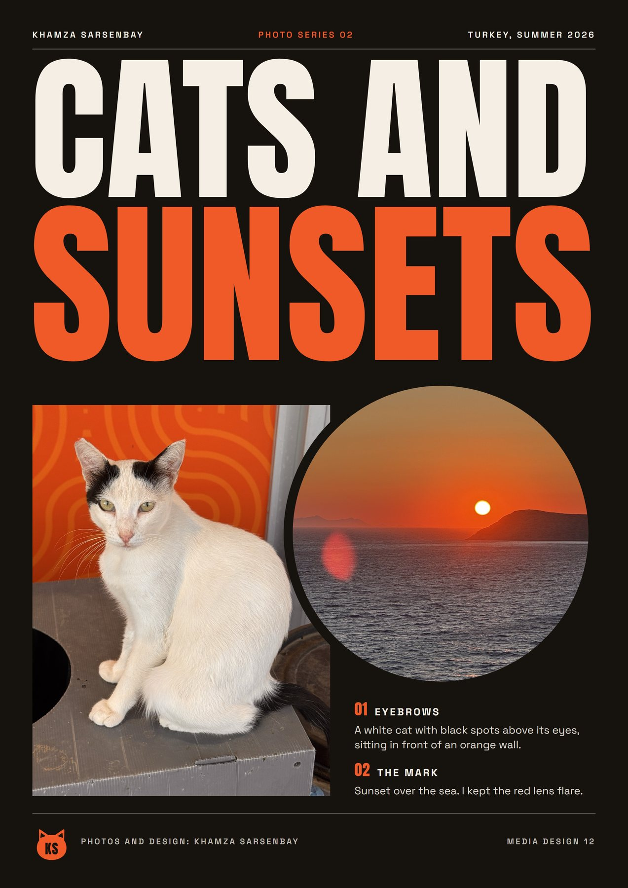

Portfolio, Media Design 12
Khamza Sarsenbay
I take photos, edit and draw in Affinity, and build AI projects. Grade 12 at CIS in Astana.

Work
Things I made this year

Painting to Photo
Recreating a painting from 1856 with a camera.

Photo Series
Coming Back, and Cats and Sunsets.

Ladybug Electric
Three ladybugs, three colour schemes.

Night Shift
A one page comic about an owl.

The Stonor Warden
A lion, a crocodile and an owl in one animal.

Urban Zoo
An owl in a suit, outside a diner.